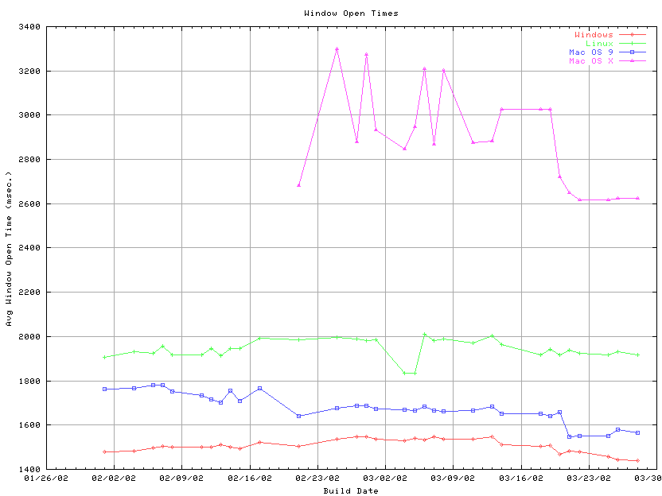

Created by barrettl on 1/25/2002
Updated on 3/28/2002
Overview: The table below outlines the latest Window Open timings. Tests were run against the machine configurations described below. Times are provided in milliseconds. When graphing the data, in the case where there is no result for a platform on a given date, the number from the previous day is used to give continuity to the graph.

| Build ID | Windows 98 | Red Hat Linux 6.2 | Mac OS 9.0 |
Mac OS X |
| Communicator 4.7x |
52 |
Testing in progress |
Testing in progress |
NA |
| Netscape 6.01 |
1916 |
Testing in progress |
Testing in progress |
NA |
| Netscape 6.1 |
2410 |
Testing in progress |
Testing in progress |
NA |
| Netscape 6.2.1 |
2367 |
Testing in progress |
Testing in progress |
Testing in progress |
| 2002-03-28-06 |
1439 |
1918 |
1565 |
2626 |
| 2002-03-26-06 |
1442 |
1930 |
1580 |
2626 |
| 2002-03-25-06 |
1457 |
1916 |
1550 |
bad build |
| 2002-03-22-06 |
1478 |
1925 |
1551 |
2619 |
| 2002-03-21-06 |
1482 |
1940 |
1549 |
2650 |
| 2002-03-20-06 |
1469 |
1916 |
1658 |
2720 |
| 2002-03-19-06 |
1508 |
1942 |
1639 |
3027 |
| 2002-03-18-06 |
1504 |
1918 |
bad build |
bad build |
| 2002-03-14-06 |
1512 |
1962 |
1651 |
3027 |
| 2002-03-13-06 |
1548 |
2004 |
1682 |
2884 |
| 2002-03-11-06 |
1535 |
1971 |
1664 |
2874 |
| 2002-03-08-06 |
1535 |
1988 |
1661 |
3204 |
| 2002-03-07-06 |
1547 |
1982 |
1664 |
2870 |
| 2002-03-06-06 |
1533 |
2011 |
1683 |
3209 |
| 2002-03-05-06 |
1541 |
bad build |
1664 |
2948 |
| 2002-03-04-06 |
1528 |
1836 |
1670 |
2847 |
| 2002-03-01-06 |
1537 |
1984 |
1674 |
2934 |
| 2002-02-28-06 |
1546 |
1982 |
1687 |
3275 |
| 2002-02-27-06 |
1547 |
1990 |
1686 |
2880 |
| 2002-02-25-06 |
1537 |
1997 |
1678 |
3301 |
| 2002-02-21-06 |
1504 |
1987 |
1639 |
2681 |
| 2002-02-18-06 |
1523 |
1991 |
1767 |
|
| 2002-02-15-06 |
1495 |
bad build |
1710 |
|
| 2002-02-14-06 |
1502 |
1947 |
1756 |
|
| 2002-02-13-06 |
1510 |
1914 |
1700 |
|
| 2002-02-12-06 |
1500 |
1944 |
1715 |
|
| 2002-02-11-11 |
1501 |
bad build |
1734 |
|
| 2002-02-08-06 |
1500 |
1916 |
1751 |
|
| 2002-02-07-06 |
1504 |
1957 |
no build |
|
| 2002-02-06-06 |
1497 |
1925 |
1779 |
|
| 2002-02-04-06 |
1484 |
1932 |
1768 |
|
| 2002-02-01-06 |
1478 |
1908 |
1764 |
Configurations: The following target configuration were tested.
HP Vector VL Pentium II 266mhz with 128 mb of ram running Windows 98 SE
HP Vector VL Pentium II 266mhz with 128 mb of ram running Red Hat Linux 6.2
Power Mac G3 266 mhz with 128 mb of ram running MacOS 9.0